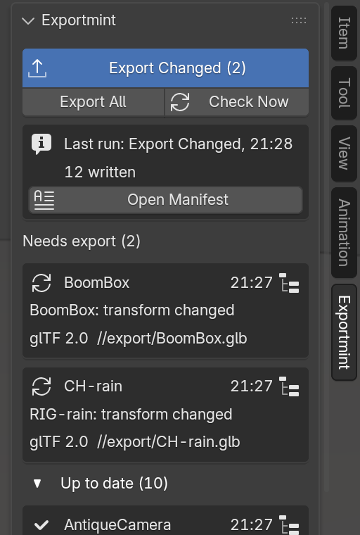
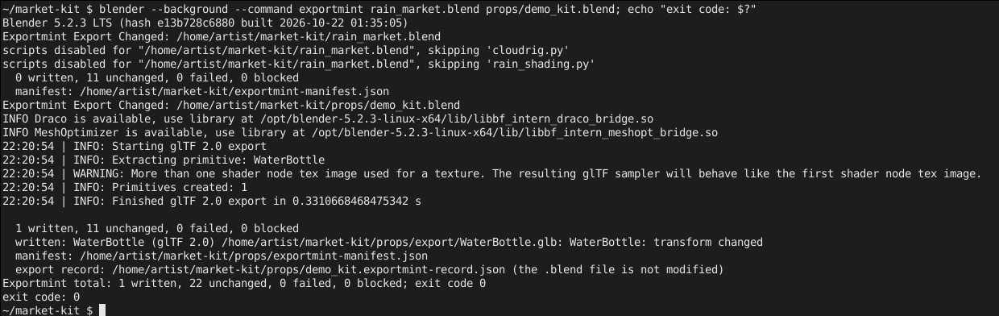

Exportmint quick start
Installing Exportmint and your first Export Changed. The full manual, README.md, is inside the download. Back to the Exportmint product page.
Install (Blender 4.2 or newer; tested on 4.2.23 LTS and 5.2.3 LTS)
- Download
exportmint-1.1.0.zip. Install the zip itself; do not unzip it first. (To read the manual, open the zip; it isREADME.mdinside.) - In Blender, open Edit > Preferences > Get Extensions.
- Blender may first ask about internet access. Exportmint needs none, so Continue Offline is fine.
- Open the drop-down menu (⌄) at the top right, choose Install from Disk... and pick the zip. Exportmint is installed and enabled.
- In the 3D Viewport, press N to open the sidebar and click the Exportmint tab.
To remove Exportmint, remove it in Preferences > Get Extensions. Your Collection Exporters are Blender's own and stay in your files: File > Export All Collections keeps working.
1. Give your collections an exporter
Exportmint works on Blender's own Collection Exporters. If your collections already have them (Properties > Collection > Exporters), skip to step 2.
- Save your .blend file first: new exporters write next to it.
- Select one or more collections in the Outliner. With none selected, the active collection is used.
- In the Exportmint tab, click Add exporter to selected collections and choose glTF 2.0, FBX or USD. Each collection gets a Collection Exporter writing
//export/<collection name>.glb(.fbx,.usd). A collection that already has an exporter of that format is skipped. - Change the format's settings in Blender's own panel, Properties > Collection > Exporters. Exportmint uses exactly those settings.
2. Read the list
The tab lists every Collection Exporter in the file, in every scene: collection, format and path, status with its reason, and the time of the last export. The first time, every row reads Never exported.

- Up to date: nothing Exportmint checks has changed since the last export, and the file on disk is the one it wrote.
- Changed: the row names the first change found, for example "BoomBox: transform changed".
- Never exported: Exportmint has no record of exporting it.
- Failed last run: the row shows the exporter's own error message.
- Blocked: it cannot run, and the row says why: the collection is empty, two exporters would write the same file, the path has no file name, or the .blend is not saved yet and the path is relative.
The list updates by itself a moment after an edit while the tab is on screen. Check Now reads every object again. The arrow on a row (Select in Outliner) makes that collection active, selects its objects and switches to its scene if needed.
3. Export Changed
- Click Export Changed (n). It runs every exporter that is changed, never exported or failed last time, through Blender's own exporter, and leaves every other file untouched on disk. It always reads every object first, so it never relies on the list's last refresh.
- The Last run box and Blender's status bar give the written, unchanged, failed and blocked counts, and each failure with its message.
- Save your .blend as usual.

Export All runs every exporter that is not blocked, changed or not. Missing output folders are created either way, and a failing exporter does not stop the others.
4. Read the manifest
Every run writes exportmint-manifest.json (for scripts) and exportmint-manifest.txt (plain words) next to the .blend file, and keeps a copy of each run in exportmint-manifest-history/<blend name>/. Open Manifest opens this .blend file's latest one in your text viewer. To write manifests somewhere else, set Manifest folder at the bottom of the tab (// paths are relative to the .blend).
For each exporter the manifest gives collection, scene, format, output path, result, reason, file size, SHA-256 and export time; for the run, the .blend path, the Blender version, and the start and end time.
5. Command line and build scripts
Exportmint must be installed and enabled in the Blender that runs the command (do not add --factory-startup).
blender --background --command exportmint [--all] [--manifest DIR] FILE.blend [FILE.blend ...]
- Opens each file in turn and runs Export Changed, or Export All with
--all. Prints the summary and writes one manifest per file. --manifest DIRwrites the manifests into DIR (with several files, intoDIR/<file name>/).- Exit code 0 when nothing failed (blocked exporters do not count as failures), 1 when an exporter failed, a file could not be opened, a manifest or record could not be written, the run was stopped with Ctrl+C, or the arguments were wrong.
- It never modifies your .blend files. Its record goes into
<blend name>.exportmint-record.jsonnext to each .blend, so the folder must be writable. The panel reads that file too, so an artist who opens the .blend sees what the build machine exported.

Example for a build script: blender --background --command exportmint --manifest build/manifests props.blend characters.blend
Character in the images: Rain Rig (CC) Blender Foundation | studio.blender.org, used under CC BY 4.0, with a Collection Exporter and a scarf colour change we added. Props from the Khronos glTF Sample Assets, CC0 1.0. Not included with Exportmint.
Limits
- Tested on Blender 4.2.23 LTS and 5.2.3 LTS on Linux; not on 4.3 to 5.1, Windows or macOS. Formats tested: glTF 2.0, FBX and USD.
- Exportmint never alters what an exporter writes. Files come from Blender's own exporters with the settings in the Collection Exporters panel.
- Not checked: world settings, render visibility, driver expressions (only their current result counts), changes inside linked libraries other than through their result. When in doubt, Export All is one click away.
- Objects are checked at the scene's current frame: on an animated object, changing the frame shows a change until you go back to the exported frame.
- If you also export with Blender's own buttons, FBX rows read "output file changed on disk" and are written once more on the next Export Changed.
- Only each exporter's main file is tracked; glTF Separate's .bin and textures are not listed or hashed.
- No automatic export on save or on a timer. English only.
Privacy
Exportmint makes no network connections and sends nothing anywhere. It writes only your exported files, the manifests and their history folder, and its record (a hidden .exportmint-record text block in the .blend and <blend name>.exportmint-record.json next to it).
Support
Email support@ochrestack.com with your Blender version, the Exportmint version (Preferences > Get Extensions) and, if you can, the manifest of the run.